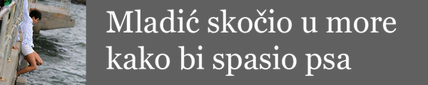
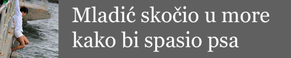

KADA je Ahmet Adulović prije mnogo godina bez razmišljanja skočio u hladnu rijeku Bosnu kako bi spasio život prijatelju Remzi Piviću, koji se nakon skoka u rijeku počeo daviti, nije ni slutio na koji će mu se način njegov veliki prijatelj odužiti nakon čak 20 godina.
Adulović je iz rodnog Bosanskog Broda emigrirao u Kanadu, a bubrezi su mu počeli otkazivati prije deset godina, kada su mu liječnici u Ottawi dijagnosticirali akutnu upalu oba bubrega. Od 2000., kada su mu bubrezi prestali funkcionirati, odlazi na dijalizu tri puta tjedno, a uz to je cijelo vrijeme radio u jednoj telekomunikacijskoj tvrtki.
Remzo mu je prvi put ponudio bubreg, odmah nakon što se kronično razbolio. ali je Ahmet to odbio, jer je smatrao da je to previše, čak od prijatelja kojem je spasio život: "Rekao sam mu da ne želim to, jer ima ženu i djecu", izjavio je za Ottawa Citizen.
Vremenom mu se stanje sve više pogoršavalo. Stotine ljudi svake godine umiru čekajući na transplantaciju organa i činilo se da će Adulović biti jedan od njih. Tada mu je Pivić ponovno ponudio bubreg, uz ultimatum, da mu, ukoliko opet odbije, više neće biti prijatelj.
Tako je Pivić iz Bosne, uz pomoć bolnice u Ottawi i ambasade BiH, došao u Kanadu da doniranjem svog bubrega "vrati uslugu" od prije dva desetljeća.
Operacija je uspjela. Pivić je otpušten iz bonice samo tri dana nakon što mu je četverosatnom operacijom izvađen bubreg koji je transplantiran Aduloviću.
Danas, mjesec dana nakon operacija, obojica se oporavljaju bez komplikacija. "Sad smo braća", kaže Adulović dok grli prijatelja čiji dio tijela mu je omogućio novi život, pa dodaje: "On je heroj".
 
